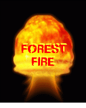
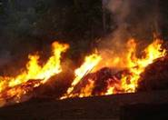

FOREST FIRE AND ITS MANAGEMENT

Forest fire causes imbalances in nature and endangers biodiversity by reducing faunal and floral wealth. Traditional methods of fire prevention are not proving effective and it is now essential to raise public awareness on the matter, particularly among those people who live close to or in forested areas.
images/Traditionally Indian forests have been affected by fires. The menace has been aggravated with rising human and cattle population and the consequent increase in demand for forest products by individuals and communities. Causes of forest fires can be divided into two broad categories: environmental (which are beyond control) and human related (which are controllable).

1. Environmental causes are largely related to climatic conditions such as temperature, wind speed and direction, level of moisture in soil and atmosphere and duration of dry spells. Other natural causes are the friction of bamboos swaying due to high wind velocity and rolling stones that result in sparks setting off fires in highly inflammable leaf litter on the forest floor.
2. Human related causes result from human activity as well as methods of forest management. These can be intentional or unintentional, for example
• graziers and gatherers of various forest products starting small fires to obtain good grazing grass as well as to facilitate gathering of minor forest produce like flowers of Madhuca indica and leaves of Diospyros melanoxylon
• the centuries old practice of shifting cultivation (especially in the North-Eastern region of India and inparts of the States of Orissa and Andhra Pradesh).
• the use of fires by villagers to ward off wild animals
• fires lit intentionally by people living around forests for recreation
• fires started accidentally by careless visitors to forests who discard cigarette butts.
The causes of forest fire have been increasing rapidly. The problem has been accentuated by the growing human and cattle population. People enter forests ever more frequently to graze cattle, collect fuelwood, timber and other minor forest produce. It has been estimated that 90% of forest fires in India are man-made.
|
Fires are a major cause of forest degradation and have wide ranging adverse ecological, economic and social impacts, including:
- Loss of valuable timber resources,
- Degradation of catchment areas,
- Loss of biodiversity and extinction of plants and animals,
- Loss of wildlife habitat and depletion of wildlife,
- Loss of natural regeneration and reduction in forest cover,
- Global warming,
- Loss of carbon sink resource and increase in percentage of CO2 in atmosphere,
- Change in the microclimate of the area with unhealthy living conditions,
- Soil erosion affecting productivity of soils and production,
- Ozone layer depletion,
- Health problems leading to diseases,
- Loss of livelihood for tribal people and
- The rural poor, as approximately 300 million people are directly dependent upon collection of non-timber forest products from forest areas for their livelihood.
|
THE NEEDS OF THE FIRE MANAGEMENT |
The incidence of forest fires in the country is on the increase and more area is burned each year. The major cause of this failure is the piecemeal approach to the problem. Both the national focus and the technical resources required for sustaining a systematic forest fire management programme are lacking in the country. Important forest fire management elements like strategic fire centres, coordination among Ministries, funding, human resource development, fire research, fire management, and extension programmes are missing.
Taking into consideration the serious nature of the problem, it is necessary to make some major improvements in the forest fire management strategy for the country. The Ministry of Environment and Forests, Government of India, has prepared a National Master Plan for Forest Fire Control. This plan proposes to introduce a well-coordinated and integrated fire-management programme that includes the following components:
-
Prevention of human-caused fires through education and environmental modification. It will include silvicultural activities, engineering works, people participation, and education and enforcement. It is proposed that more emphasis be given to people participation through Joint Forest Fire Management for fire prevention.
-
Prompt detection of fires through a well coordinated network of observation points, efficient ground patrolling, and communication networks. Remote sensing technology is to be given due importance in fire detection. For successful fire management and administration, a National Fire Danger Rating System (NFDRS) and Fire Forecasting System are to be developed in the country.
-
Fast initial attack measures.
-
Vigorous follow up action.
-
Introducing a forest fuel modification system at strategic points.
-
Fire fighting resources.
|
Each of the above components plays an important role in the success of the entire system of fire management. Special emphasis is to be given to research, training, and development.
INTEGRATED FOREST PROTECTION |
-
The main objective of this scheme to control forest fires and strengthen the forest protection in Tamilnadu. The works like fire line clearing, assistance to Joint Forest Management committees, creating water bodies, purchase of vehicles and communication equipments, purchase of fire fighting tools, etc., are being undertaken.
-
During 2002-2003, this scheme has been implemented at a cost of Rs.100.00 lakhs and it is proposed to implement this scheme during 2003-2004 at an outlay of Rs.371.08 lakhs
The compartmental space would control the fire within the limited area thus making it easy to put it out. This was being done in all the six ranges in the Coimbatore division - Coimbatore, Periyanaickenpalayam, Karamadai, Mettuppalayam, Sirumugai and Pooluvampatti - covering the total forest area of 68,347.72 hectares.
-
Fire-patrol parties comprising forester, guard, watchers and firewatchers have been formed in all the six ranges. They are equipped with walkie-talkies to communicate with the base station, if they required more manpower and logistics.
The teams were working under the supervision of the respective rangers.
-
Services of the regular range office staff and that of anti-poaching teams are also being used to prevent accidental fires and in certain cases, intentional fires caused by poachers. Vigil would be maintained from the first week of February till the end of the summer season in May.
-
With the summer fast approaching, the Forest Department has made efforts to combating man-animal conflicts which were likely in Anaikatti, Karamadai, Madukkarai, Thondamuthur, Siruvani, Marudhamalai, Sirumugai and other belts where elephants and other wild animals normally stray into human habitations in search of food and water. Personnel were being kept ready to chase the animals back to their migratory routes.
|
|